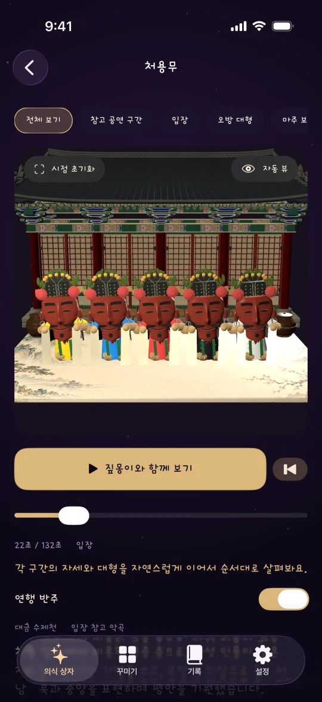
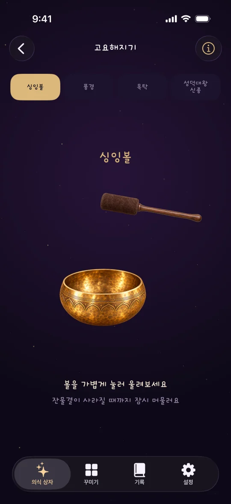

움직이며 체험하기
처용무, 북청사자놀음, 강강술래, 지신밟기를 3D 무대에서 만나고 이야기와 동작 해설을 읽어 보세요.
Ritual Atlas Box · iPhone
짚몽이와 함께 한국의 옛 풍습을 만나 보세요. 전통의 몸짓을 살펴보고, 내려놓고 싶은 마음을 작은 인형에 담아 보내거나 싱잉볼의 잔잔한 울림에 머무를 수 있습니다.
처용무, 북청사자놀음, 강강술래, 지신밟기를 3D 무대에서 만나고 이야기와 동작 해설을 읽어 보세요.
마음에 남은 일을 글로 적고, 작은 인형에 담아 떠나보내는 상징적인 의식을 경험해 보세요.
싱잉볼을 가볍게 두드리고, 울림과 잔물결이 잦아드는 동안 잠시 쉬어 보세요.

